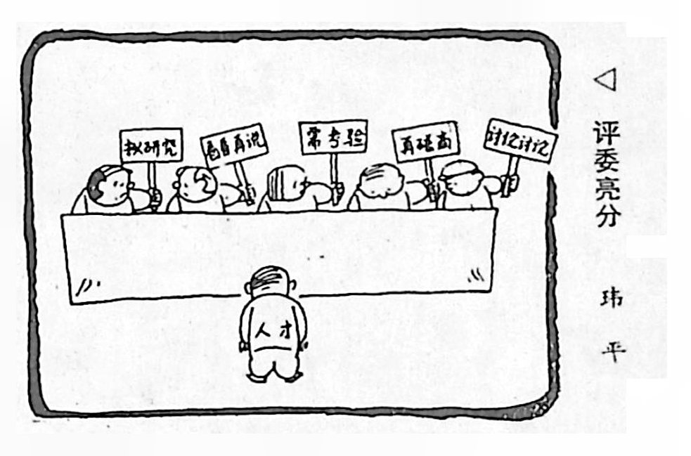

玮平 《人事》1988年第12期（总第39期），封三
评委亮分
The Judges Show Their Scores
- Text in the drawing
- 拟研究 / 看看再说 / 需考验 / 再磋商 / 讨论讨论 / 人才
To be studied / We'll see / Needs testing / Further consultation / Let's discuss it / Talent - Description
- Five officials behind a long table hold up score cards like competition judges — “to be studied,” “we'll see,” “needs testing,” “further consultation,” “let's discuss it” — before a small figure labeled “talent.”
- Artist
- Wei Ping 玮平
- Published in
- 《人事》1988年第12期（总第39期）, inside back cover
- Themes
- Talent and its neglect · Bureaucratism

Cite
Wei Ping, “评委亮分” [The Judges Show Their Scores], Renshi (Personnel) 《人事》, 1988, no. 12, inside back cover.